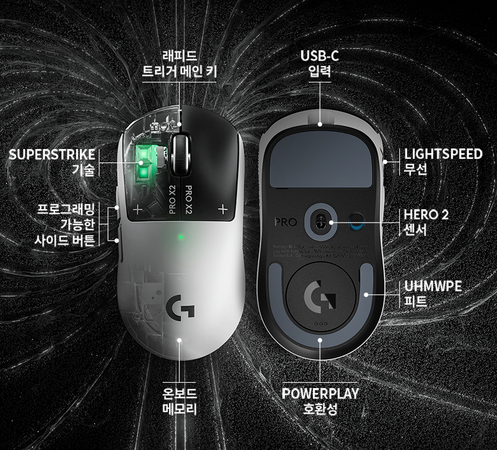
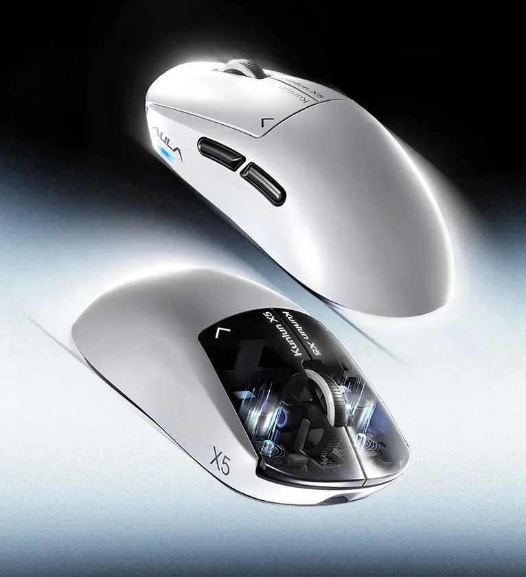
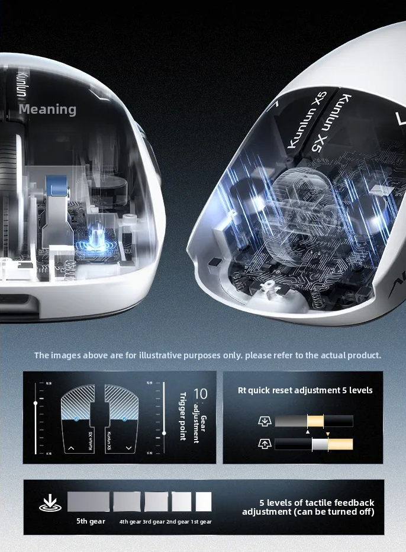
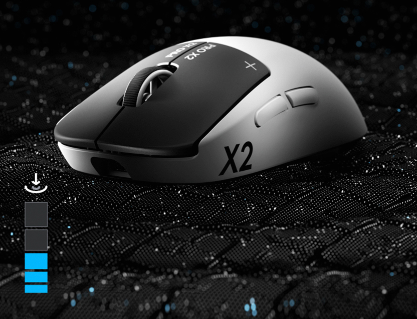
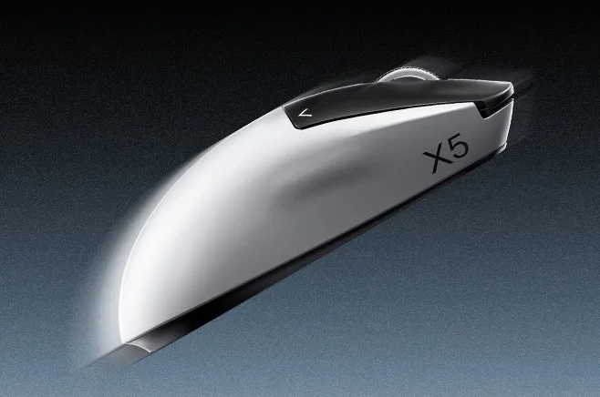

FPS겜돌이나 컴덕들사이에서 품귀상태 + 리셀 까지 생겼던 로지텍G PRO x2 슈퍼스트라이크(줄여서 지슈스) 라는 마우스가있음
마우스 좌우 클릭스위치를 래피드트리거(입력위치설정가능) 와 햅틱피드백도입이라는 기존마우스구조를 극복한 모델로 알려져있음
이게 올해 2월에 출시되어서 아직도 팔리고있는데.....

7개월 만에 대륙에서 카피제품이 나와버렸다(.....)
그것도 이게 2번째제품임 ㅋㅋㅋ 문제는 저거 제작사가 독거미 키보드로 유명한 AULA

솔직히 제품설명만 보면 무게빼고는(이놈이 4g인가 무거움) 거의 설명이 동일하다고 봐도 무방하다
그런데 웃긴게

이게 지슈스임

이건 짱슈스이고
저 X5 레터링은 뭐때문에 넣은건가싶기도함. X2하면 소송걸릴가봐 X5로했나 ㅋㅋㅋ
한줄요약 : 7개월이 걸리긴했는데 어떻게 카카시 해버리는 대륙. 그런데 이번달말에 지슈스2(개편ver)나온다던데 흠....
그래서 저거 사면되냐
나 마침 마우스 바꾸려고 했는데 트루먼쇼인가 허허